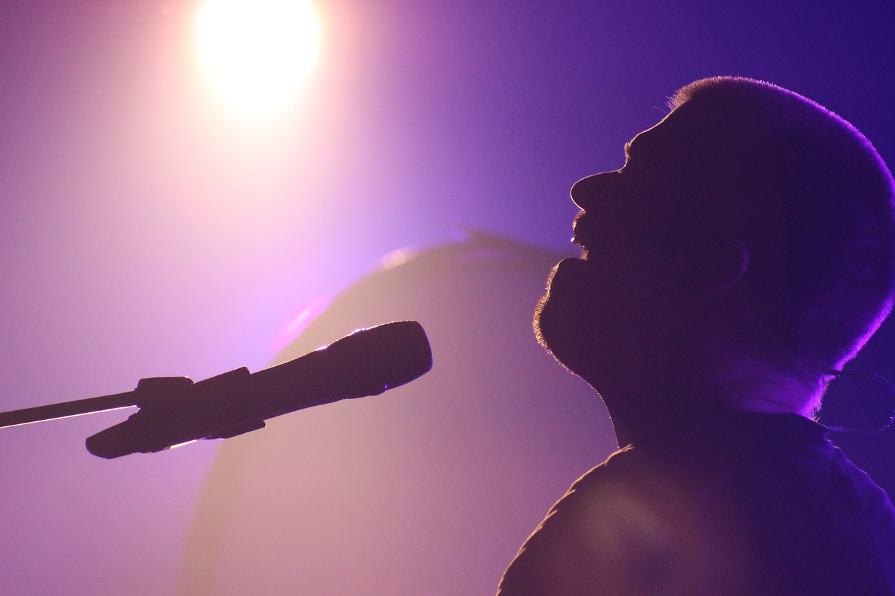
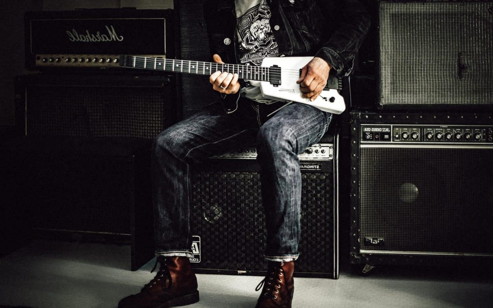
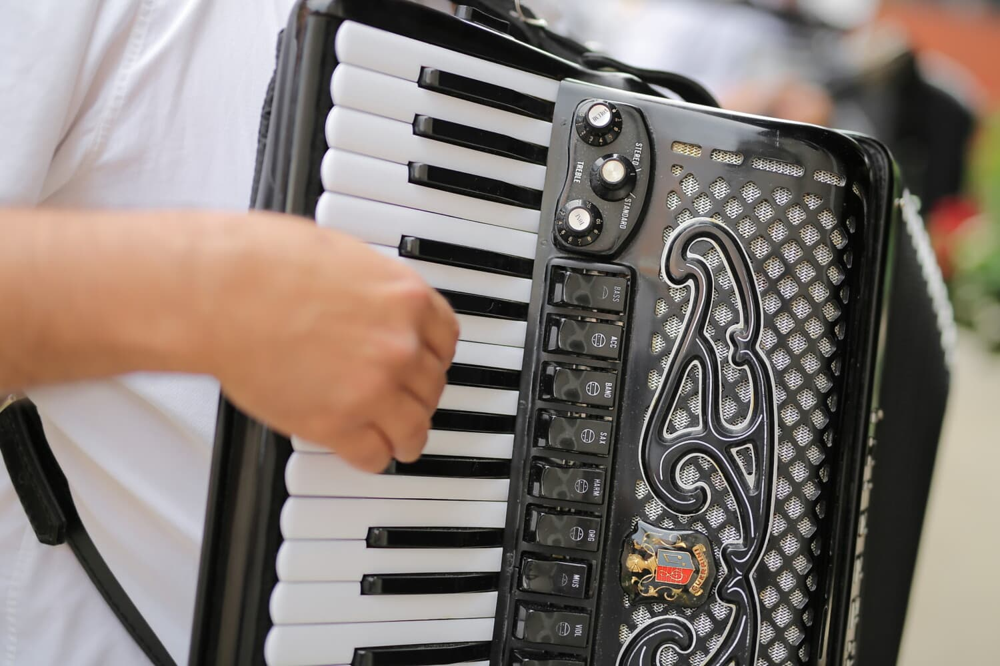
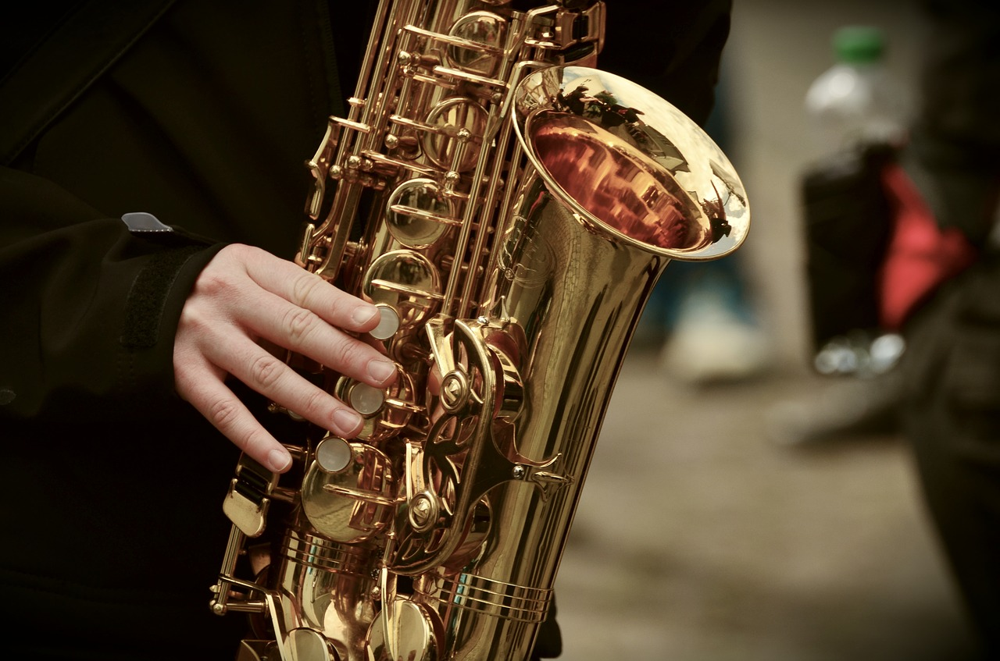

La Banda
-

Pedro Tous Durán
Vocal
Fecha incorporación: 18/09/2018
Historia: Pedro empezó como vocal en "Los Singers", pero el grupo se disolvió en 2018 y entonces fundó "Music Family"
-
John Bum Bum
Percusión
Fecha incorporación: 18/01/2020
Historia: John se incoropró a la banda en 2020 para sustituir a Michel
-

Mario Guitar
Guitarra Eléctrica
Fecha incorporación: 18/09/2018
Historia: Mario es miembro fundador de la banda tras su paso por los "Dire Straits"
-
María Guitar
Guitarra Clásica
Fecha incorporación: 11/03/2019
Historia: María se incoropró a la banda en 2019 para acompañar a su hermano Mario
-
Marta Fiddle
Violín
Fecha incorporación: 18/01/2021
Historia: Marta se unió a la banda en 2021 para darle un toque más lírico
-

Thomas Accordion
Acordeón
Fecha incorporación: 18/01/2021
Historia: Thomas se incoropró a la banda junto a Marta como acompañamiento
-

Marcos Soplos
Saxo
Fecha incorporación: 18/09/2018
Historia: Marcos es miembro fundador de la banda tras trabajar junto a Michael Brecker hasta 2005
-
Piamo Key
Teclados
Fecha incorporación: 18/09/2018
Historia: Piamo también es miembro fundador de la banda tras finalizar sus estudios en la Escuela de Música de Mallorca